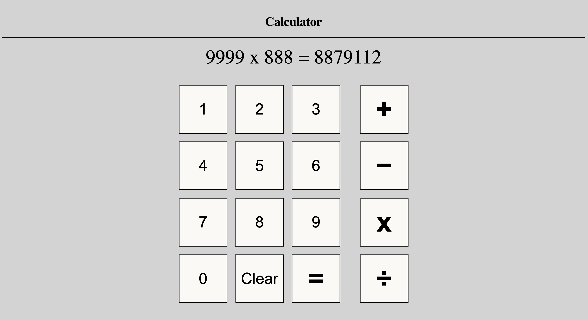

Overview
What I’ve Done
- Developed the calculator interface using HTML and CSS to create an easy-to-use, responsive layout.
- Implemented JavaScript functionality to handle basic arithmetic operations like addition, subtraction, multiplication, and division.
- Added features like error handling (e.g., division by zero) and a clear button to reset the calculator.
